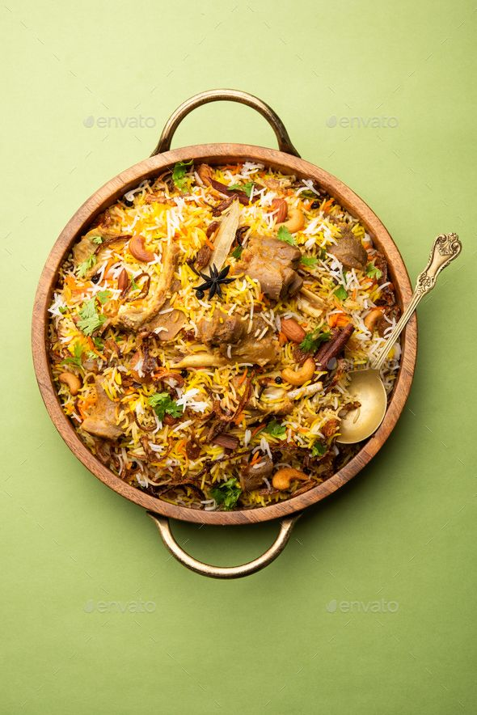

Hi myself Shiva Ram Reddy Marthala, I'm from India. I did my bachelor's in computer science and done the certification in my area of interest. Currently I'm pursuing my masters in Computer science at Northwest Missouri State University. And most of the time to spend myself in playing Cricket,volleyball,chess,badminton,etc. Having dream to visit one of the top listed tourist place Ladakh, the destiny of life.
Biryani is an immensely popular and diverse dish in India, and it has evolved to have numerous regional variations, each with its own unique flavors and cooking techniques. Here are some of the most well-known biryani types in India:
Hyderabad, the capital city of the Indian state of Telangana, is renowned for its flavorful and aromatic biryanis. The city has several types of biryani, each with its unique ingredients and cooking styles. Here are some of the most popular types of biryani in Hyderabad: Hyderabadi Chicken Biryani, Hyderabadi Mutton Biryani, Hyderabadi Dum Biryani. 